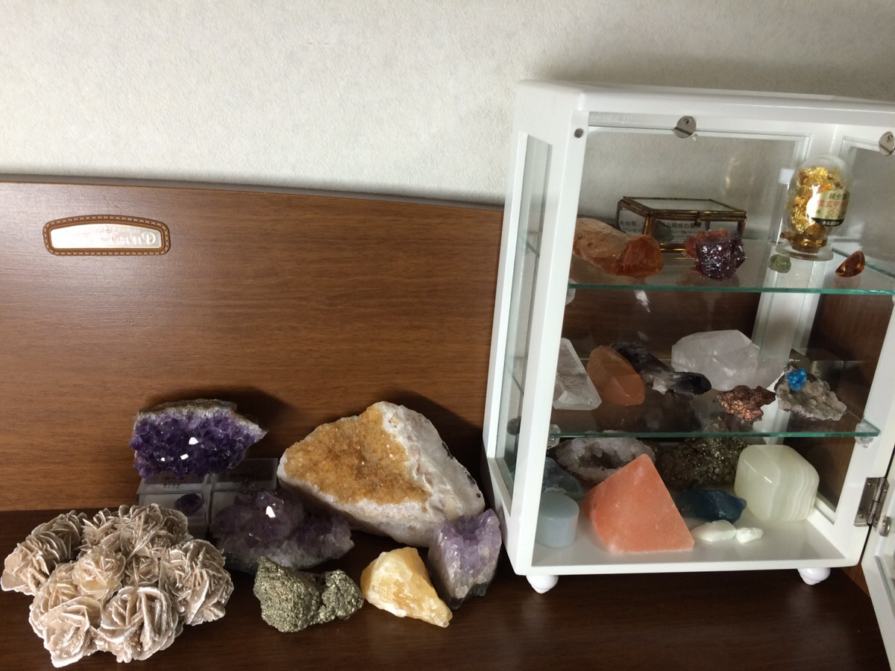
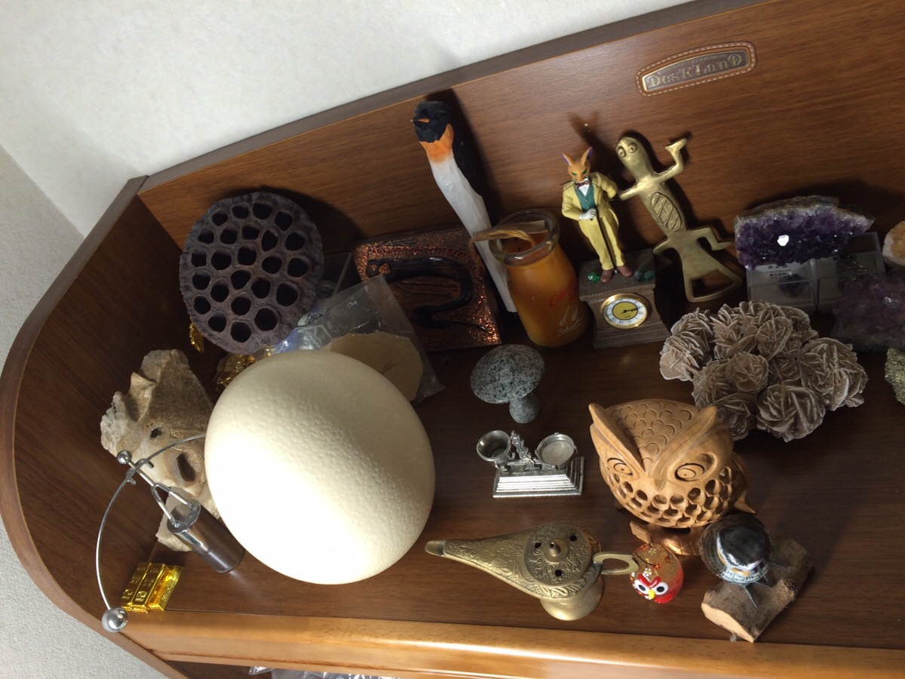

プロフィール
私について
| 氏名 佐藤 勇斗 1997年3月18日生 趣味 コーヒー、珍品収集、鉱石収集 |
 |
| 黙々と努力を続け、チーム制作において皆の「礎」となる存在になれるよう、ゲーム制作を通してプログラムを勉強中。 また、人の話をしっかり聞くことができ、即行動できることが強みである。あまり社交的ではないが、こだわりは捨てることなく、相手の要求を納得のいくまで聞き、チームで１つの物を作り上げることに全力を尽くす。 |
趣味
| プログラムはもちろん、ドット絵や作曲も好きで、個人制作の作品は、素材集をなるべく使わず、全部自分で作る。また、プライベートでは鉱石集めや珍品収集等、珍しい物好き。コーヒーは豆を専門店で購入して手挽きミルで引くことで、香りや味の違いを楽しんでいる。 |
|
|  |  |
スキル
| ゲーム制作ツールはcocos2d-x と Unityを主に利用。C#とC++を使い制作している。自作クラスやメソッド作成において、なるべく効率のいい方法を考えるのが好き。最近はチーム制作をメインでやっており、メンバーに合わせてコードの見やすさやメンテナンスのしやすさに注意をしながらコードを書いている。音を作成するツールはDomino,Figureを利用。ドット絵はスマホのアプリ「PIXELAIT」で隙間時間を使って描いている。GAIRA 「ぺらいち」チャレンジコンテスト大賞受賞の「ガラロボ」もこのアプリでドット絵を作成した。 |
クリエイティブ履歴
- 2017/03/19
- 日本ゲーム大賞2017 アマチュア部門に応募する「はさむ」をテーマとした作品を制作中。
- 2017/03/18
- 企画コンテストで大賞を取った「ガラロボ」を、GooglePlayにて配信。
- 2017/02/15
- 企画コンテストで大賞を取った「ガラロボ」を、CCS2017にアプリ作品として展示。
- 2016/12/16
- クリエータートライアウト 5日間で他校の学生とゲーム制作にて、「たまこい」作成。
- 2016/12/04
- GAIRA「ぺらいち」チャレンジコンテストにて「ガラロボ」が GAIRA大賞を受賞。
- 2016/10/07
- Unityを使って戦車ゲームを作ろうプロジェクト → ２か月で試作品はできたが、プロジェクト消滅。
- 2016/10/05
- ２Dアクションゲーム「アイアイガサ」を学内展示会で展示。
- 2016/06/30
- ２Dアクションパズルゲーム「PlantPlanet」作成し、日本ゲーム大賞アマチュア部門コンテストに応募。
- 2016/03/07
- ホリホリラビットをcocos2d-xでリメイクした「ホリホリラビット２」を作成し、学内展示会で展示。
- 2016/02/16
- cocos2d-xの勉強のため、「チャーミングチョコレート」作成し、CCS2016に展示。
- 2016/01/29
- チェスを題材にしたパズルゲーム「Chessmick」を作成し、GFFAWARDに応募。
- 2015/09/10
- PCゲーム「わしが店主」を作成し、シニア向けゲームコンテストに応募。
- 2015/09/17
- ２Dアクションゲーム「ホリホリラビット」を作成し、東京ゲームショウの専門学校ブースで展示。
- 2015/07/17
- ２週間程度でミニゲーム「ジュラシックジャンプ」を作成。
- 2015/06/30
- Unityで２Dシューティングゲームを完成させ、日本ゲーム大賞アマチュア部門コンテストに応募。
- 2015/04/09
- 名古屋工学院専門学校に入学し、クリエイティブ人生スタート。 Unity ＆ プログラミング初体験。